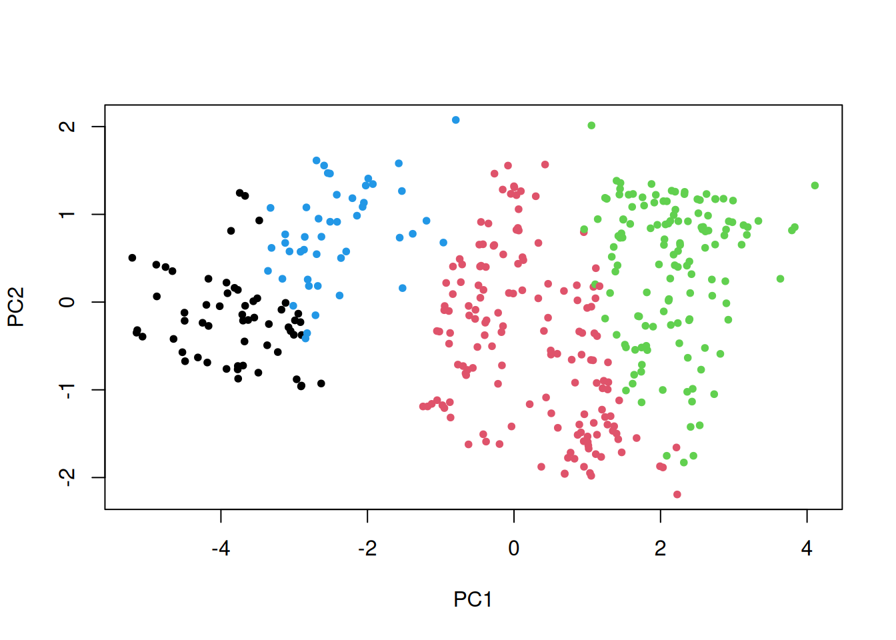

Klasterdamist võib mõista muuhulgas ka objektide kogumi mitmeks osaks tükeldamisena. See lähenemine ongi aluseks K-keskmiste klasterdamisele. Selle käigus jaotatakse tunnuste ruum osadeks nii mitu korda, kui on vaja, et iga objekt oleks võimalikult lähedal ühele klastri keskpunktile. See keskpunkt on klastrikeskmine (centroid) ning klastrikeskmiste ja seega ka soovitud klastrtite arv \(K\) tuleb määrata enne klasterdamist.
Selle klasterdamise eesmärk on jaotada objektid \(x_i\) klastritesse arvul \(K\) nii, et kaugused iga objekti ja samasse klastrisse kuuluvate objektide keskpunkti vahel oleksid võimalikult väikesed. Selleks määratakse iga objekt lähima klastrikeskmise alusel ühte klastrisse ja seejärel arvutatakse igasse klastrisse kuuluvate objektide keskpunktid \(\bar x_1, ... \bar x_K\). Kõige sobivamad klastrikeskmised saadakse korduvalt minimeerides funktsiooni \[ESS = \sum^K_{k = 1} \sum_{c(i)=k} (x_i - \bar x_k)^T(x_i - \bar x_k),\] kus \(c(i)\) on objekti \(x_i\) sisaldav klaster.
Important
K-keskmiste klasterdamist (k-means clustering) kasutades jaotatakse objektide kogum korduvalt osadeks, liigutades igal korral eelnevalt määratud arvul klastrikeskmisi. Klastrikeskmisi liigutatakse selliselt, et kõikde objektide kauguste summa nende lähimast klastrikeskmisest oleks võimalikult väike.
Võrreldes mõne muu klasterdamise meetodiga k-keskmiste klasterdamine
saab hakkama ka suure arvu objektide klastritesse jagamisega,
on põhimõtteliselt kasutatav prognoosimiseks, sest iga vaatluse jaoks sobivama klastri määrab lähim klastrikeskmine,
vajab, et klastrite arv oleks ette antud,
võib korduval rakendamisel anda erinevad klastrid,
eeldab, et objektide jaotus tunnuste ruumis klastrikeskmiste ümber on enam-vähem ringikujuline ja klastrid on sarnase läbimõõduga.
Protsess kõige sobivamate klastrikeskmiste leidmiseks hõlmab järgnevaid samme.
Arvutatakse kauguste maatriks, milles on kaugused objektide ja (esimesel kordusel enamasti juhuslikult määratud) \(K\) klastrikeskmise vahel.
Iga objekt määratakse sellesse klastrisse, mille klastrikeskmisele see kõige lähemal on.
Vastavalt tekkinud uutele klastritele arvutatakse uued klastrikeskmised.
Eelnevaid samme korratakse senikaua, kuni iga objekt asub klastris, mille keskmisele see kõige lähemal on.
27.1 Klastrite leidmine
Alljärgnevas klasterdamise näites kasutame enne 1983. aastat tootmises olnud autode mudelite andmeid. Üritame jaotada autod klastritesse mitmesuguseid mõõtmeid ja teisi suurusi iseloomustavate tunnuste alusel. Sisestame klasterdamiseks kasutatavad arvtunnused lihtsuse huvides eraldi objekti.
Arvtunnused mõõdavad erinevaid nähtusi ja on nii ka väga erinevatel skaaladel. Seetõttu on vajalik need väärtused enne igasuguste kauguste mõõtmist tunnuste ruumis ühtlasele skaalale viia. Samuti ei saa me mõõta kaugusi, kui mõnede vaatluste asukoht tunnuste ruumis on teadmata. Seega tuleb sellised vaatlused välja arvata.
Seoseid arvtunnuste vahel saame ilmestada paariviisiliste hajuvusjoonistega.
pairs(autotunnused, pch =20, cex = .2, oma =c(2,2,2,2))
Kuigi tunnuste paariviisilisel uurimisel ei ilmne klastreid, võivad need siiski olla peidus mitme tunnuse hajuvuses. Paljude tunnuste hajuvust saame enamasti suurel määral ilmestada kahe peakomponendiga.
Saame jooniselt eristada vähemalt kolm punktikogumikku. Seega võiks nende tunnuste alusel autod jaotada kolmeks sisemiselt sarnaseks rühmaks. R keeles saame k-kesmiste alusel klastrid arvutada funktsiooniga kmeans(), mille argumendi centers väärtuseks peame sisestama soovitud klastrite arvu (või iga soovitud klastri algsed keskpunktid). Leiame alustuseks kolm klastrit.
Funktsioon väljastab mitmesuguseid parameetreid klasterdamise protsessi ja tulemuste kohta. Igale vaatlusele saame määrata andmetabelisse klastri, kasutades funktsiooni kmeans() tulemuse osist cluster. Nt kuna sisestasime eelnevalt klasterdamise tulemuse objekti kkesk, siis saame iga vaatluse klastri kätte käsuga kkesk$cluster.
autod$klaster <- kkesk$clusterhead(autod)
mpg cylinders displacement horsepower weight acceleration year origin
1 18 8 307 130 3504 12.0 70 American
2 15 8 350 165 3693 11.5 70 American
3 18 8 318 150 3436 11.0 70 American
4 16 8 304 150 3433 12.0 70 American
5 17 8 302 140 3449 10.5 70 American
6 15 8 429 198 4341 10.0 70 American
name klaster
1 chevrolet chevelle malibu 3
2 buick skylark 320 3
3 plymouth satellite 3
4 amc rebel sst 3
5 ford torino 3
6 ford galaxie 500 3
Warning
Funktsioon kmeans() määrab klastri numbri juhuslikult, mistõttu võib samal klastril olla igal järgmisel klastrite leidmisel erinev number.
27.2 Klastrite arv
Kuna k-keskmiste korral leitakse sobivamad klastrid vaatluste kogumi korduva tükeldamise teel, siis ei ole selle tulemuseks klastrite hierarhiat, mida saaks kujutada puujoonisel. Nii ei saa kasutada puujoonist ka klastrite valimiseks.
Kõige sobivama klastrite arvu määramiseks saame aga kasutada nn Gap mõõdikut (Gap statistic). Selle mõõdiku väärtus iseloomustab, kui palju väiksemad on klastrisisesed kaugused teatud klastrite arvu korral olemasolevate andmete korral võrreldes ühtlase jaotusega andmetega. Kui klastrite lisamine annab väiksemad klastrisisesed kaugused, siis peaksime kasutama rohkem klastreid ja vastupidi. Sealjuures peame arvesse võtma ka mõõdiku usaldusvahemikke ja valima suurema klastrite arvu ainult juhul, kui mõõdiku vastavad usaldusvahemikud ei kattu mõõdiku usaldusvahemikega väiksema arvu klastrite korral.
Saame seda näitlikustada joonisega, mille saab tekitada funktsiooniga clusGap laiendusest cluster alljärgnevalt. Et teada saada klasterdamise tulemus erinevate klastrite arvuga, tuleb klasterdamist korrata ja selleks tekitame funktsiooni nimega kmFun().
Antud joonisel on kujutatud, kui ühtsed klastrid me erineval arvul klastrite leidmisel saame. Peame joonise abil välja selgitama, millise klastrite arvu juures nende lisamine enam ühtsemaid klastreid ei anna. Näeme, et viie klastri kasutamine ei anna väiksemaid klastrisiseseid kaugusi kui nelja klastri korral. Seega on nende andmete klasterdamiseks sobilik kasutada hoopis nelja klastrit.
Klastrite hierarhia asemel kujutatakse k-keskmiste alusel moodustunud klastreid enamasti hajuvusjoonisel, kus telgedel on kaks tunnuste peakomponenti ja klastrid on kujutatud erinevate värvidega.
plot(peakomponendid$x[, 1:2], pch =20, col = autod$klaster)

Näeme, et esitatud kahe mõõtme alusel suutis algoritm üsna usutavalt vaatlused klastritesse jagada.
Vaatluse klastri määrab k-keskmise meetodi korral kõige lähem klastri keskpunkt, mis selgus korduva vaatluste jaotamis tulemusel nagu eelnevalt kirjeldatud. Funktsiooni kmeans() poolt väljastatud teabe seas on ka need klasterdamiseks kasutatud tunnuste keskmised saadud klastrite lõikes.